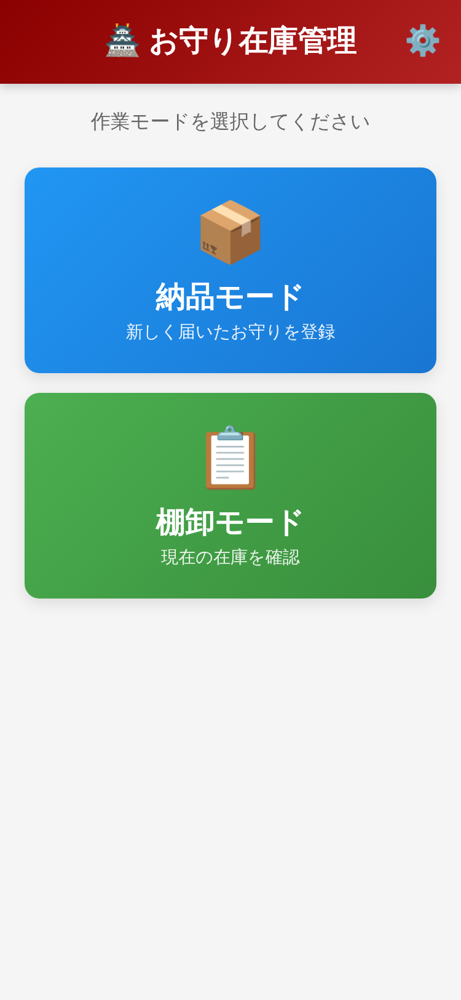
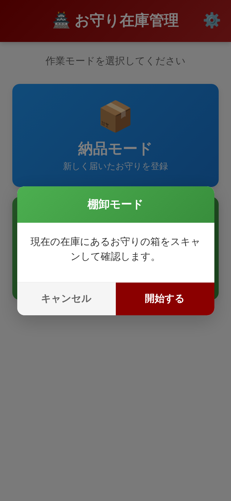
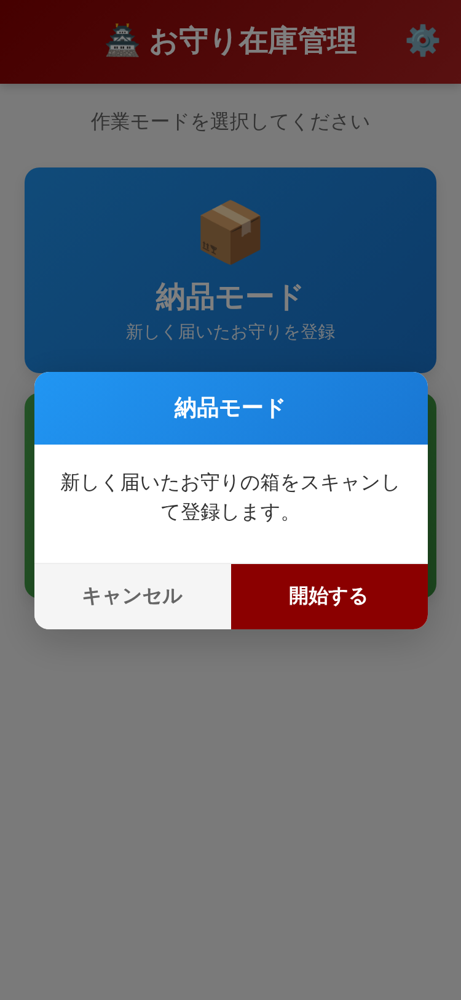
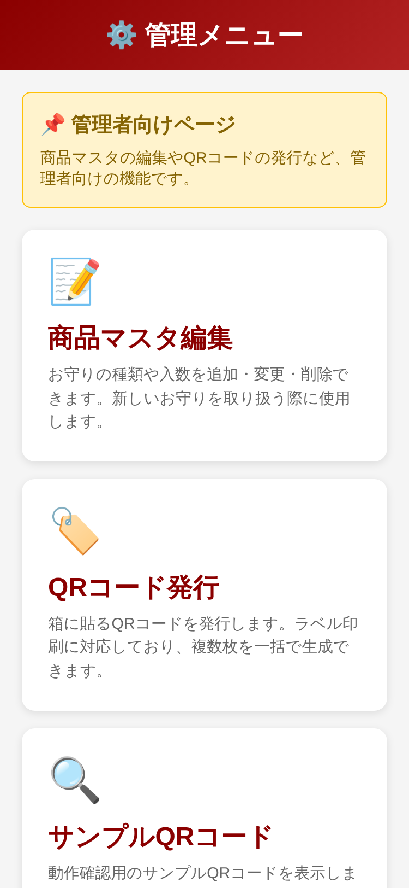
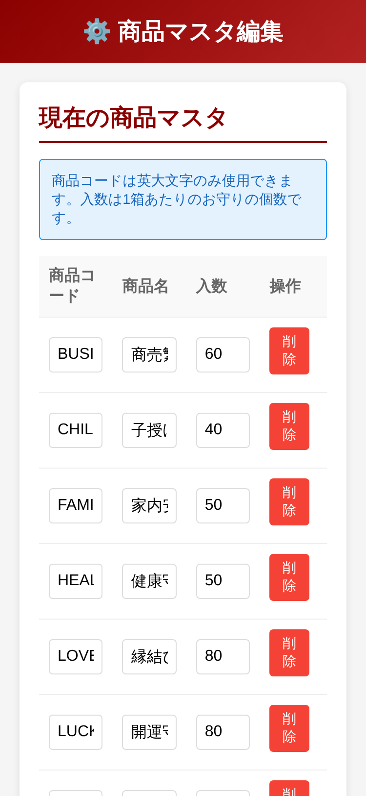
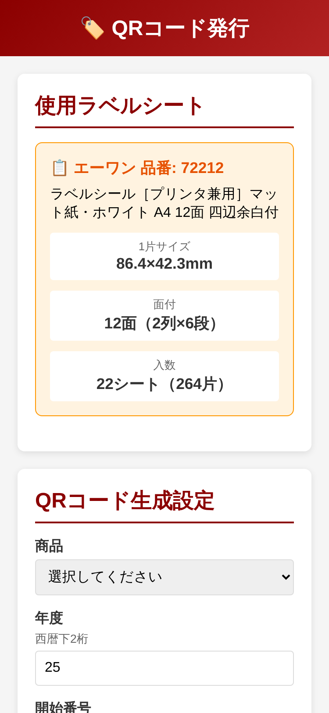

1. アプリの概要
このアプリは、お守りの在庫管理を簡単に行うためのツールです。
箱に貼られたQRコードをスマホで読み取るだけで、在庫の確認や納品の登録ができます。
主な機能
📋
棚卸モード
現在の在庫を確認するときに使います
📦
納品モード
新しく届いたお守りを登録するときに使います

▲ アプリを開くとこの画面が表示されます
2. 棚卸の手順
1
「棚卸モード」をタップ
青いボタンをタップします
2
確認画面で「開始する」をタップ
内容を確認して開始します

▲ 確認画面が表示されます
3
QRコードを読み取る
カメラが起動するので、箱のQRコードをかざします
4
確認画面で「登録する」をタップ
読み取った内容を確認して登録します
💡 ヒント
同じQRコードを2回読み取ると「重複検知」の警告が出ます。数量が二重にカウントされることはありません。
5
すべて読み取ったら「読み取り終了」をタップ
集計結果が表示されます
6
「CSV出力」で結果を保存・共有
ダウンロードまたはLINE等で共有できます
3. 納品登録の手順
基本的な流れは棚卸と同じです。
1
「納品モード」をタップ
赤いボタンをタップします

▲ 納品モードの確認画面
2
届いた箱のQRコードを読み取る
1箱ずつ読み取っていきます
3
「読み取り終了」→「CSV出力」
結果を保存・共有します
4. CSV出力・共有
読み取り結果は2つの方法で出力できます。
📥 ダウンロード
CSVファイルをスマホに保存します。後からExcelなどで開けます。
📤 共有する
LINE、メール、AirDropなどで送信できます。CSVファイルと集計結果のテキストが一緒に送られます。
💡 おすすめ
「共有する」を使うと、LINEで簡単に結果を送れます。CSVファイルも添付されるので便利です。
5. 商品マスタの編集
新しいお守りを追加したり、入数を変更できます。
1
右上の ⚙️ をタップ
管理メニューが開きます

▲ 管理メニュー
2
「商品マスタ編集」をタップ
マスタ編集画面が開きます

▲ マスタ編集画面
4
「ブラウザに保存」をタップ
変更が保存されます
⚠️ 注意
ブラウザのキャッシュをクリアすると、保存したマスタが消えます。「エクスポート」でバックアップを取っておきましょう。
6. QRコードの発行
新しい箱用のQRコードを発行できます。
1
管理メニュー → 「QRコード発行」
発行画面が開きます

▲ QRコード発行画面
2
商品・年度・枚数を設定
必要な情報を入力します
3
「QRコードを生成」をタップ
プレビューが表示されます
💡 対応ラベルシート
エーワン 72212（86.4mm × 42.3mm、12面）に対応しています。
7. よくある質問
Q. カメラが起動しません
A. 設定アプリ → Safari → カメラ で「許可」を選択してください。
Q. 同じQRを2回読んでしまいました
A. 大丈夫です。重複検知機能により、数量は1回分しかカウントされません。
Q. マスタを他のスマホと共有したい
A. マスタ編集画面の「エクスポート」でJSONファイルを保存し、他のスマホで「インポート」してください。
Q. 読み取り中に間違えて戻ってしまいました
A. 残念ながら、読み取りデータは失われます。最初からやり直してください。